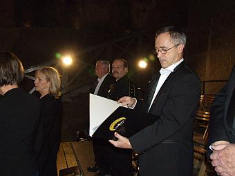
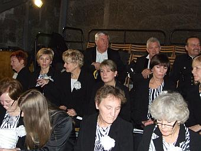
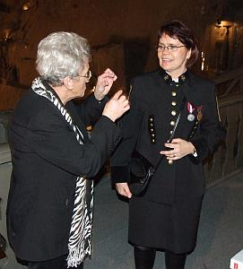
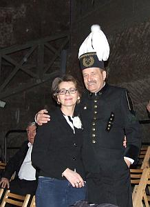
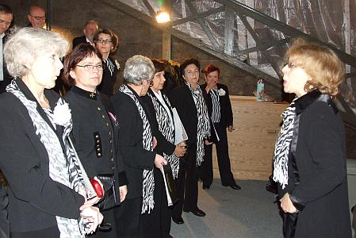
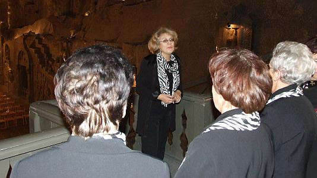
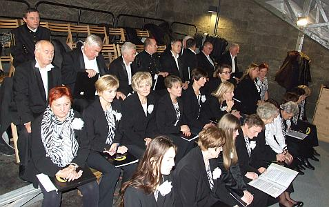
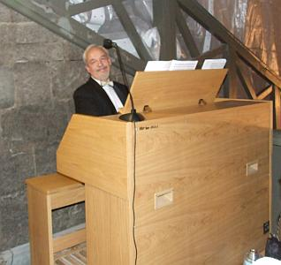
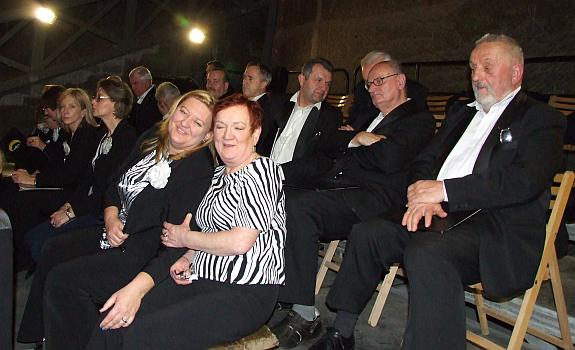
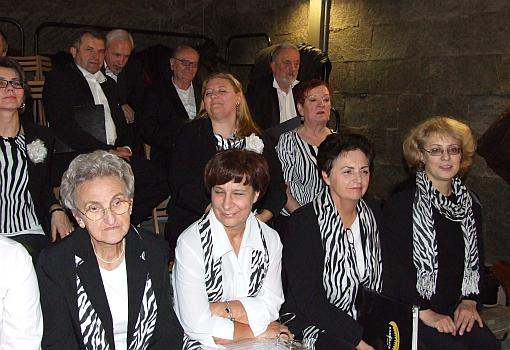

A tymczasem w Cameracie...
.
2013-12-02
Zjeżdżamy do kopalni dużo wcześniej niż górnicy, bo musimy się rozśpiewać i przygotować do koncertu. Idziemy znanymi nam już chodnikami do kaplicy, na chór. 
Mamy w tym roku już trzech górników: dwoje dawnych, czyli Anka i Zbyszek
 
oraz nową chórzystkę – górniczkę, Ksenię. A że nowa, to cały czas się uczy, taka dola nowych (wiem coś o tym :)
Zgodnie z tradycją podziemne uroczystości rozpocznie Msza św., którą odprawi w kaplicy św. Kingi biskup Jan Zając a my oprawiać ją będziemy muzycznie, ale najpierw dajemy koncert.
 
Górnicy dziękowali swojej patronce za mijający rok i prosili o dalszą opiekę a Camerata im pomagała pięknie śpiewając.

Akompaniował nam podczas koncertu oraz oprawiał muzycznie całą mszę nasz kolega - Zenon Kulik.

Po mszy jeszcze chwila koncertu i odpoczynek.
 

© Stowarzyszenie Muzyczne Chór Camerata Wieliczka
Projekt i wykonanie:  Prowadzenie strony: Małgorzata Wysocka-Cebula
Prowadzenie strony: Małgorzata Wysocka-Cebula